University Traditions
Spring Quarter

UCSD Cares Week
When: April
Where: on campus
Hosted by: Center for Student Involvement, UCSD Student Foundation, Associated Students, and the UCSD Bookstore
For whom: All students
What it is about:
A community service campaign for student organizations, campus centers, and departments
- 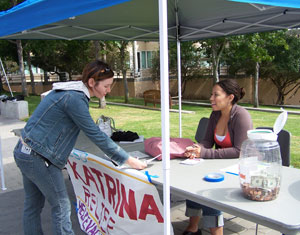
- 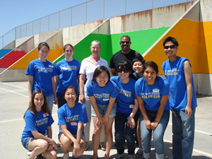
- 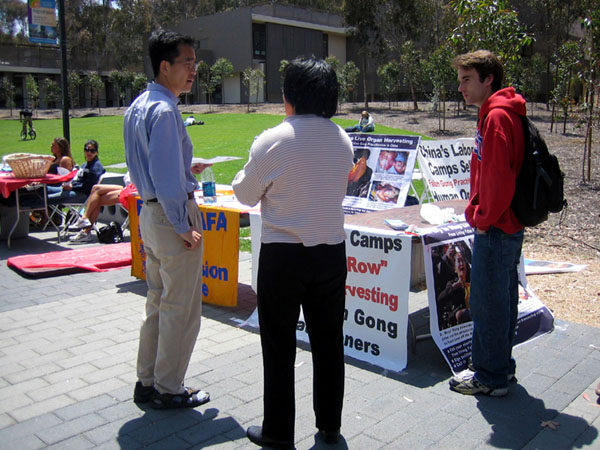
Triton Junkyard Derby
When: Second week of May
Where: Peterson Hill in front of Geisel Library
Hosted by: Triton Engineering Student Council
Foe whom: All students
What it is about:
Student teams create vehicles out of discarded material and compete in a downhill race while being cheered on by other students, faculty, and staff. The community also votes on the "most creative" car
*A UCSD tradition since: 2004
- 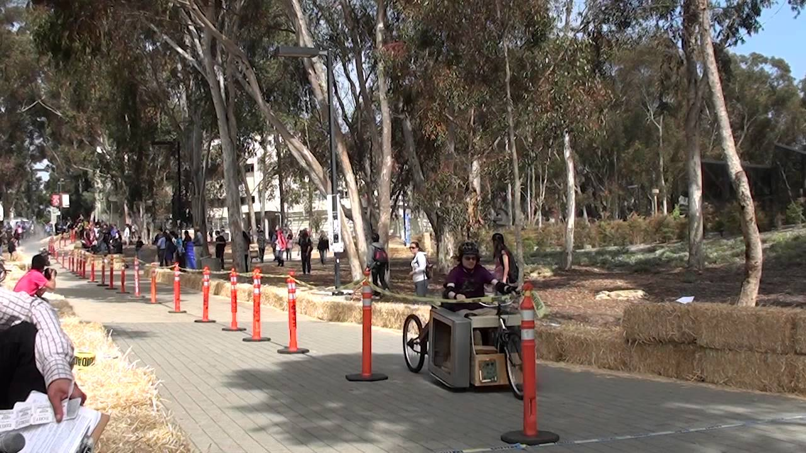
- 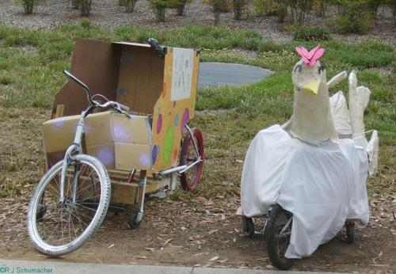

Sun God Festival
When: Second Friday of May
Where: Centered around the Sun God Lawn, spreading across Library Walk to the Price Center and RIMAC
Hosted by: Associated Students
For whom: All students
What it is about:
UCSD's annual rite of spring features a day of concerts by nationally known artists, plus food and other festival booths
- 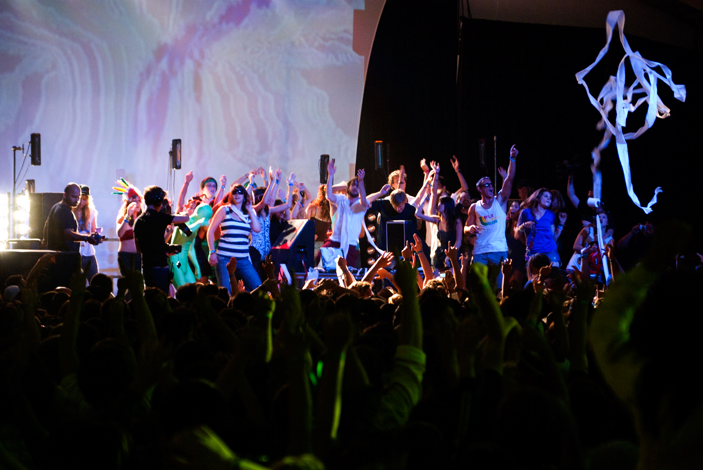
- 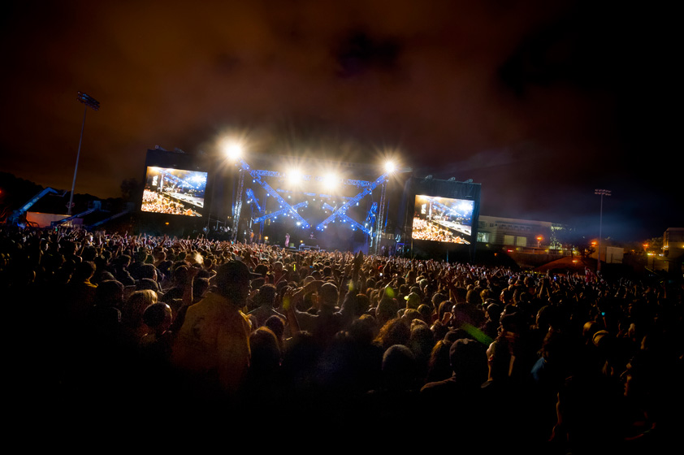
- 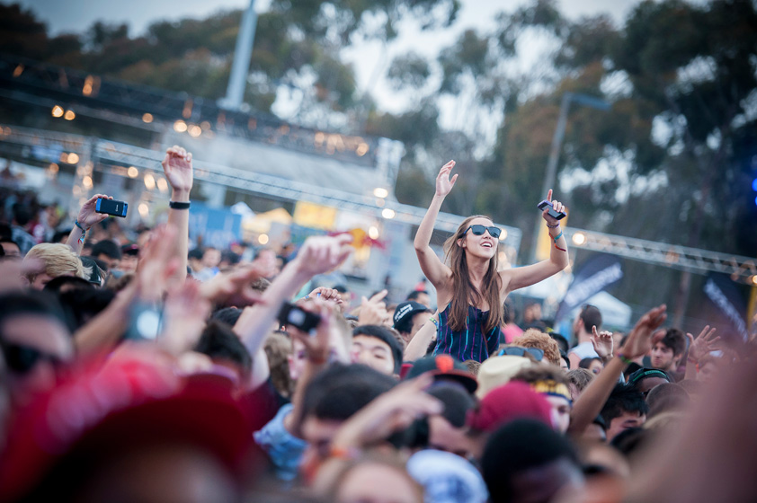
Triton Family 5K
When: June (during Alumni Weekend)
Where: La Jolla campus; race begins on the North Campus Field, next to RIMAC
Hosted by: Alumni
For whom: Students, faculty, staff, alumni, and friends
What it is about:
This cross-country race for students, faculty, staff, alumni, and friends raises money for undergraduate scholarships at UCSD
*A UCSD tradition since: 1996
- 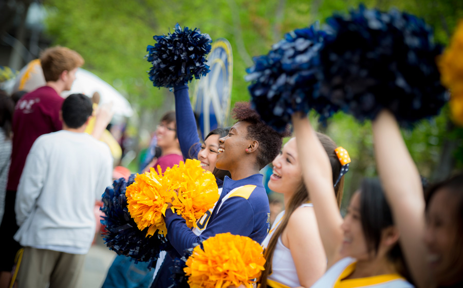
- 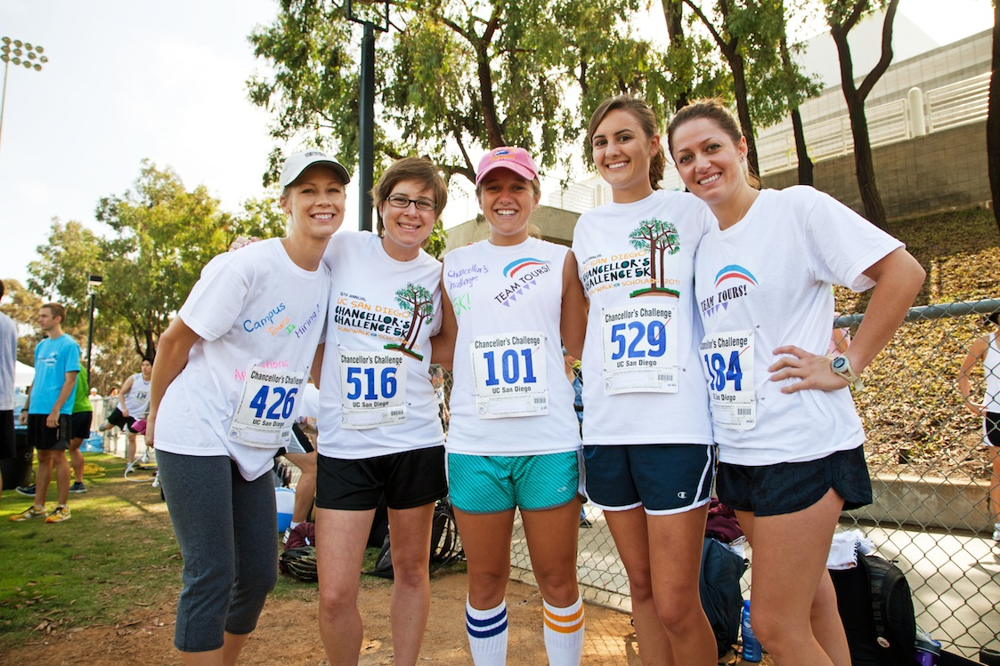
- 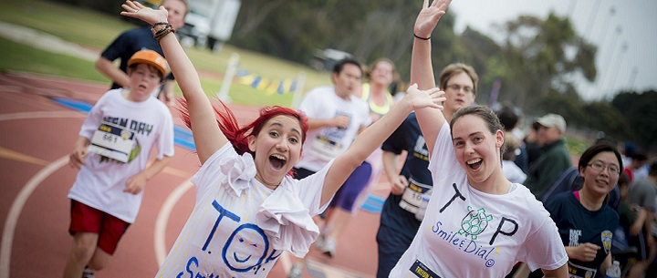